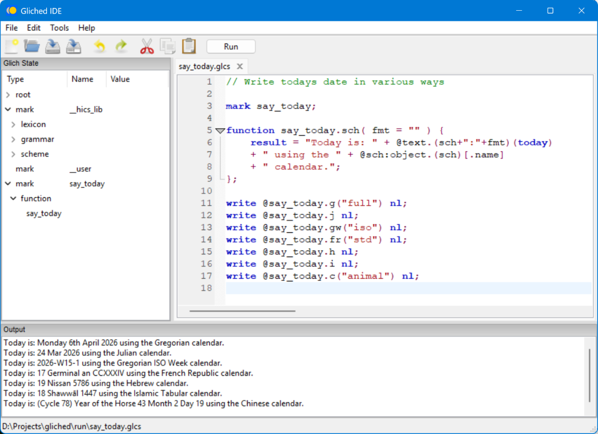

Introduction
Gliched IDE is a lightweight, cross-platform integrated development environment for the Glich scripting language. It is designed to make writing, editing, and running Glich scripts easy and efficient, for beginners and experienced users.

Gliched IDE is at the very beginning of its development. Many features are still being planned or are under active construction. This is a good time to get involved—your feedback, ideas, and contributions can help shape the direction and capabilities of the IDE as it grows.
Key Features
- Simple, modern interface: Focus on your code with a clean and intuitive layout.
- Tabbed editing: Work on multiple scripts simultaneously with ease.
- Integrated script runner: Run Glich scripts directly from the IDE and view output instantly.
- State inspection: View variables, objects, and other Glich state in real time.
- Project management: Open, save, and organize your Glich scripts with ease.
- Cross-platform: Available on Windows. Tested on macOS and Linux and will be fully supported in future releases.
About Glich
Glich is an extensible scripting language with Hics, an extension for creating historical calendars, formatting them, and managing date ranges. Full details about Glich and Hics can be found at the Glich website.